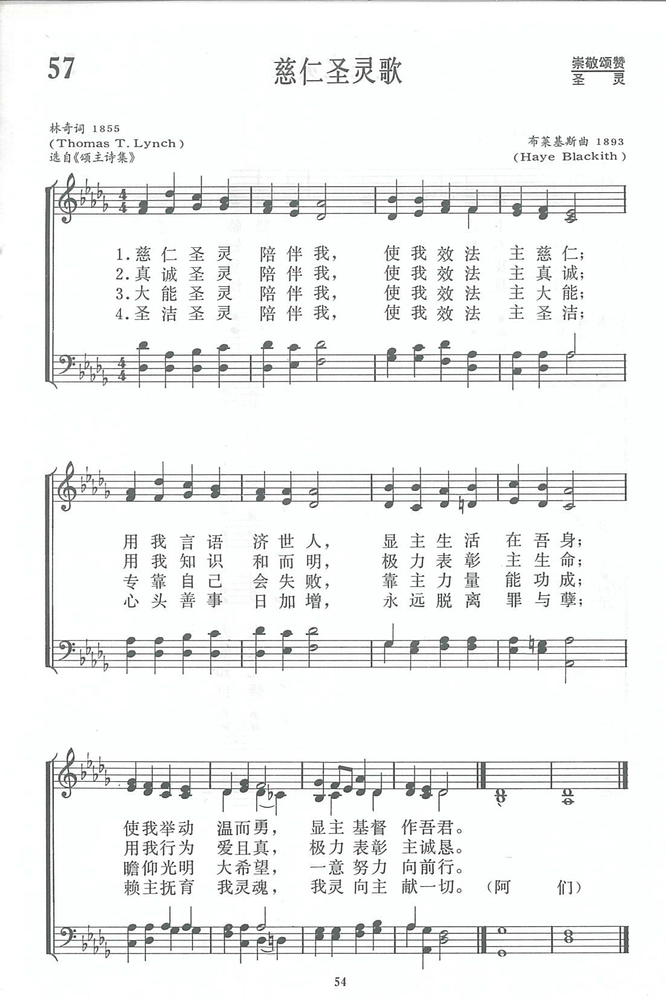
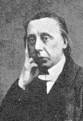
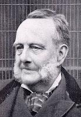

|
|
颂主新歌 |
|
1 Gracious Spirit, dwell with me: 2 Truthful Spirit, dwell with me: 3 Mighty Spirit, dwell with me: 4 Holy Spirit, dwell with me: |
1.仁慈圣灵陪伴我，使我效法主仁慈，
|
|
https://www.zanmeishige.com/tab/13688.html?songbook=1&index=57
 https://www.mred365.cn/szxg/7222.html Wells
Gracious Spirit, Dwell with Me
|
|
|
|
|


HMC Choir [恳求圣灵居我心 Gracious Spirit, Dwell with Me] https://youtu.be/9xwRH7b5Ork -
Gracious Spirit, dwell with me (Dix) https://youtu.be/mAyIQzqjE6s -
Gracious Spirit, Dwell with Me (Redhead No 76) https://youtu.be/LeYZEalAZ5g
| Text: | Gracious Spirit, Dwell with Me |
| Author: | Thomas T. Lynch |
| Tune: | REDHEAD |
| Composer: | Richard Redhead |
| Short Name: | Thomas T. Lynch |
| Full Name: | Lynch, Thomas T. (Thomas Toke), 1818-1871 |
| Birth Year: | 1818 |
| Death Year: | 1871 |
Lynch, Thomas Toke,

was born at Dunmow, Essex, July 5, 1818, and educated at a school at Islington, in which he was afterwards an usher. For a few months he was a student at the Highbury Independent College; but withdrew, partly on account of failing health, and partly because his spirit was too free to submit to the routine of College life. From 1847 to 1849 he was Minister of a small charge at Highgate, and from 1849 to 1852 of a congregation in Mortimer Street, which subsequently migrated to Grafton Street, Fitzroy Square. From 1856 to 1859 he was laid aside by illness. In 1860 he resumed his ministry with his old congregation, in a room in Gower Street, where he remained until the opening of his new place of worship, in 1862, (Mornington Church), in Hampstead Road, London. He ministered there till his death, on the 9th of May, 1871.
The influence of Lynch's ministry was great, and reached far beyond his own congregation (which was never large), since it included many students from the Theological Colleges of London, and thoughtful men from other churches, who were attracted to him by the freshness and spirituality of his preaching. His prose works were numerous, beginning with Thoughts on a Day, 1844, and concluding with The Mornington Lecture, 1870. Several of his works were published after his death. His Memoir, by W. White, was published in 1874.
Lynch's hymns were published in:—
Notes
A century ago, Christians took their hymns very seriously. So seriously that the publication of Thomas Toke Lynch's (1818-1871) little hymnbook, The Rivulet 1855 ("for Christian poetry is indeed a river of life, and to this river my rivulet brings its contribution"), almost split the Congregational Church. The "Rivulet Controversy," as it was called, centered around Lynch's frequent references to nature in his hymn texts, but the controversy was probably exacerbated by his fresh poetic style. The great hymnologist, John Julian, says, "Lynch's hymns are marked by intense individuality, gracefulness and felicity of diction, picturesqueness, spiritual freshness, and the sadness of a powerful soul struggling with a weak and emaciated body." Though the booklet was meant simply as an in-church supplement to Isaac Watt's popular hymnbook, the controversy spilled beyond his own church's walls and provoked the likes of Spurgeon to condemn him for promoting bad theology.
While "Gracious Spirit, Dwell with Me" does not contain examples of his controversial nature imagery, it has been accused of promoting the "human spirit" rather than the Holy Spirit. In light of the third verse's prayer for the indwelling of the Holy Spirit, and the hymn's overall concentration on the fruits of the Spirit, these criticisms are unfounded. Lynch's life also bears the mark of the Spirit; in the middle of these turbulent times he said, "The air will be all the clearer for this storm. We must conquer our foes by suffering them to crucify us rather than by threatening them with crucifixion." Although this trial did nothing to shake his faith, his health suffered significantly, and it is thought that it contributed to his early death.
The tune, REDHEAD 76,
is given its name because it was the 76th tune in Richard Redhead's
(1820-1901) Church Hymn Tunes. Redhead was trained as a chorister at
Magdalene College, Oxford, and though he was a reputable organist, he is
chiefly remembered as one of the key figures in the Oxford "Gregorian
Revival." REDHEAD 76 is probably best known as the tune to "Go to Dark
Gethsemane," and is therefore often referred to as "GETHSEMANE;" but has
also been called "PETRA" (rock) for its association with the text "Rock
of Ages." --Greg Scheer, 1997
===============================
Gracious Spirit, dwell with me. T. T. Lynch. [Whitsuntide.] First published in his work, The Rivulet, a Contribution to Sacred Song, 1855, p. 79, in 6 stanzas of 6 lines. It was brought into congregational use through the Baptist Psalms & Hymns, 1858. From that date it has steadily increased in popularity in Great Britain and America, and is given in full or in part in numerous hymn-books, especially those in use by Nonconformists.
--John Julian, Dictionary of Hymnology (1907)
| Tune: | [Gracious Spirit! dwell with me] |
| Composer: | H. de la Haye Blackith |
Tune Information
| Title: | PALGRAVE |
| Composer: | H. de la Haye Blackith (1893) |
| Meter: | 7.7.7.7.7.7 |
| Incipit: | 51765 55665 34325 |
| Key: | D Major |
| Copyright: | Public Domain |
| Short Name: | H. de la Haye Blackith |
| Full Name: | Blackith, Hanson de la Haye, 1845-1926 |
| Birth Year: | 1845 |
| Death Year (est.): | 1926 |
Hanson de la Haye Blackith was born in Whaplode, Spalding, Lincolnshire, England in 1845. He was an organist of St. Mary’s Collegiate Church in the town of Warwick, England in 1882.
NN, Hymnary. Source: https://en.wikipedia.org/wiki/Collegiate_Church_of_St_Mary,_Warwick
Tune Information
| Title: | REDHEAD NO. 76 |
| Composer: | Richard Redhead (1853) |
| Meter: | 7.7.7.7.7.7 |
| Incipit: | 11234 43112 32211 |
| Key: | E♭ Major |
| Source: | Church Hymn Tunes, Ancient and Modern (London: 1853) |
| Copyright: | Public Domain |
| Short Name: | Richard Redhead |
| Full Name: | Redhead, Richard, 1820-1901 |
| Birth Year: | 1820 |
| Death Year: | 1901 |
Richard Redhead (b. Harrow, Middlesex, England, 1820; d. Hellingley, Sussex, England, 1901)

was a chorister at Magdalen College, Oxford. At age nineteen he was invited to become organist at Margaret Chapel (later All Saints Church), London. Greatly influencing the musical tradition of the church, he remained in that position for twenty-five years as organist and an excellent trainer of the boys' choirs. Redhead and the church's rector, Frederick Oakeley, were strongly committed to the Oxford Movement, which favored the introduction of Roman elements into Anglican worship. Together they produced the first Anglican plainsong psalter, Laudes Diurnae (1843). Redhead spent the latter part of his career as organist at St. Mary Magdalene Church in Paddington (1864-1894).
Bert Polman
Notes
REDHEAD 76 is named for its composer, who published it as number 76 in his influential Church Hymn Tunes, Ancient and Modern (1853) as a setting for the hymn text "Rock of Ages." It has been associated with Psalm 51 since the 1912 Psalter, where the tune was named AJALON. The tune is also known as PETRA from its association with "Rock of Ages," and GETHSEMANE, which derives from the text "Go to Dark Gethsemane" (381).
Of the three long lines constituting REDHEAD 76, the last is almost identical to the first, and the middle line has an internal repeat. Well-suited to singing in parts, this music is also appropriate for unaccompanied singing.
Richard Redhead (b. Harrow, Middlesex, England, 1820; d. Hellingley, Sussex, England, 1901) was a chorister at Magdalen College, Oxford. At age nineteen he was invited to become organist at Margaret Chapel (later All Saints Church), London. Greatly influencing the musical tradition of the church, he remained in that position for twenty-five years as organist and an excellent trainer of the boys' choirs. Redhead and the church's rector, Frederick Oakeley (PHH 340), were strongly committed to the Oxford Movement, which favored the introduction of Roman elements into Anglican worship. Together they produced the first Anglican plainsong psalter, Laudes Diurnae (1843). Redhead spent the latter part of his career as organist at St. Mary Magdalene Church in Paddington (1864-1894).
--Psalter Hymnal Handbook
第57首 慈仁圣灵歌 Gracious Spirit,dwell with me _T.T.Lynch
经文：“我要求父，父就另外赐给你们一位保惠师,叫他永远与你们同在……”(约l4：16).
《慈仁圣灵歌》以效法主、服务人为生活中心，颇得现代人的喜爱，曾被护士工作创始人南丁格尔(F.Nightingale，182O一191O)选为护士协会的会歌。
作者林奇(T.T.Lynch，1818一1871)乃英国公理会(见第25首注①)牧师。他气貌不扬，也没有多好的口才，但却能以他的人格、道德、学术吸引了许多有思想的敬虔信徒。他的诗代表公理会所推崇的自由，强调个人直接与神交通，得到灵力服务社会。但也有人认为这首诗过于主观，不适宜于公共崇拜，仅可用于个人灵修与默想。
这首诗初见于1855年林奇牧师所编的一本圣诗集，名为《小川》，因他认为基督教的圣诗犹如生命活水的大海，个人的著作乃是微小的流水，但愿其能百川汇海。
不料这本小册子出版之后，名布道家司布真等群起反对，认为林奇牧师没有信仰,否定神学，不合教义；另一方面则有林奇的公理会同仁起来为他辩护。双方各执一词，掀起了一场争论。虽然林奇自己宣称“风波终要平静，不难水落石出”，却竭尽全力参与这场笔墨官司。素来健康就不甚好的林奇终因操劳过度，47岁便息了劳苦，临终时叹息说：“我现在要去重新开始生活。”这种宗派之争，门户之见，血气之勇，都不能发扬真理，见证主道，只能是两败俱伤，主名受损。现代的信徒应吸取教训，免蹈历史的覆辙。
曲调名(POEGAVE)是布莱基斯(H.Blackith)于1893年所作。
Words: Thomas Toke Lynch (b. July 5, 1818; d. May 9,
1871)
Music: Redhead, by Richard Redhead (b. Mar. 1, 1820; d.
Apr. 27, 1901)
Links:
Wordwise Hymns (Thomas
Lynch)
The
Cyber Hymnal
Hymnary.org
Note: Pastor Lynch also gave us the hymn A Thousand Years Have Come and Gone. (See the Wordwise Hymns link above for comments on this hymn.)
If a soldier doesn’t follow orders, he can find himself in big trouble. Insubordination is not only an offense against a commanding officer, it may put other soldiers in danger. Conviction for disobeying a command can result in a court-martial, a dishonorable discharge, and even imprisonment.
However, it’s not absolute. A soldier is not obligated to follow an illegal order. This was the crux of the argument made against the Nazis in the Nuremberg Trials (1945-1946). Accused of complicity in the slaughter of millions of Jews, those before the bar of justice were not excused by saying, “We were simply following orders.”
And a more recent example: When Donald Trump said he thought America’s armed forces should use torture on enemies to get information, he seemed not to realize that torture has been declared illegal. The military would rightly refuse to follow an order from their Commander-in-Chief to engage in it.
But overall, laws place helpful boundaries on members of society, with the purpose of protecting them, and others around them. The same can be said for the laws of God. In the Old Testament, the Law given to Israel was made up of 613 commands covering every aspect of life. Christians are not bound by the Jewish Law, but God’s moral standard has not changed today.
“Shall we sin because we are not under law but under grace? Certainly not!” (Rom. 6:15). It’s still wrong to lie, and to steal (Eph. 4:25, 28), and much more. In fact, the standard is even higher on this side of the cross. Though I can’t vouch for the number, someone has counted 1,050 commands in the New Testament. And we now have, with the New Testament, God’s completed written revelation, and have the perfect example of the Lord Jesus to follow.
This raises a question: Who on earth could ever follow all those commands? The answer is no one. Not perfectly. We even fall short of keeping a summary of the Law. The Lord Jesus said the most important commandments of the Old Testament Law were to love God and love others (Matt. 23:36-40; cf. Rom. 13:9), and we’re told “love is the fulfilment of the law” (Rom. 13:10). But who can say they love God perfectly, or love others perfectly? We all fall short.
This in itself is a function of God’s holy standard. Not only to tell us how to live, but to remind us of how weak and fallible we are (Rom. 3:23). If we’re to begin to walk God’s way, we need help. And God has provided it through His Holy Spirit. This brings us to a hymn written by English pastor Thomas Lynch. It uses the first line as a title: Gracious Spirit, Dwell with Me.
There’s much to commend this hymn, but I must take issue with the phrase, “dwell with me,” repeated in each of the song’s five stanzas. He’s asking the Holy Spirit to dwell with him. But perhaps a better wording would be “strengthen me.”
Here’s why. The Lord promised the Spirit (after Pentecost) would not only be with us but in us (Jn. 7:37-39; 14:17). The Christian does not need to ask for Him. The moment an individual trusts Christ as Saviour, he or she is indwelt by the Holy Spirit (Rom. 5:5; I Cor. 2:12; 6:19-20). Not to have the Spirit within means the person is not yet saved (Rom. 8:9).
It’s the work of the indwelling Spirit to give us the power we need to live a life pleasing to God. He helps us to understand and apply God’s truth, and produces in us the character of Christ, including love, joy, peace, and more (Gal. 5:22-23). And “if we live in the Spirit [through the new birth], let us also walk in the Spirit [empowered and guided by Him, step by step]” (Gal. 5:25).
I believe Pastor Lynch’s hymn works better with the change suggested above, “strengthen me.” Here it is, with that amendment.
CH-1) Gracious Spirit, strengthen me!
I myself would gracious be;
And with words that help and heal
Would Thy life in mine reveal;
And with actions bold and meek
Would for Christ my Saviour speak.
CH-2) Truthful Spirit, strengthen me!
I myself would truthful be;
And with wisdom kind and clear
Let Thy life in mine appear;
And with actions brotherly
Speak my Lord’s sincerity.
CH-3) Tender Spirit, strengthen me!
I myself would tender be;
Shut my heart up like a flower
In temptation’s darksome hour,
Open it when shines the sun,
And his love by fragrance own.
CH-4) Mighty Spirit, strengthen me!
I myself would mighty be;
Mighty so as to prevail,
Where unaided man must fail;
Ever, by a mighty hope,
Pressing on and bearing up.
CH-5) Holy Spirit, strengthen me!
I myself would holy be;
Separate from sin, I would
Choose and cherish all things good,
And whatever I can be
Give to Him who gave me Thee!
Questions:
1) What is it about “walking” that beautifully illustrates how we are to
live the Christian life?
2) How is this process explained in John Sammis’s hymn Trust and Obey?
Links:
Wordwise Hymns (Thomas
Lynch)
The
Cyber Hymnal
Hymnary.org
https://wordwisehymns.com/2018/05/14/gracious-spirit-dwell-with-me/
"GRACIOUS SPIRIT, DWELL WITH ME" hymnstudiesblog
"He…shall also give life to your mortal bodies by His Spirit that dwelleth in you" (Rom. 8:11)
INTRO.:
A hymn which makes a request that God’s Spirit would dwell in us is "Gracious Spirit, Dwell with Me" (#116 in Hymns for Worship Revised). The text was written by Thomas Toke Lynch (1818-1871). In 1855, while serving as a Congregationalist minister with the Mornington church in the London, England, area, he published a hymn collection entitled The Rivulet: Hymns for Heart and Voice, designed as a supplement to the Hymns of Isaac Watts. It included this song, perhaps his best known. Other hymns by Lynch which have appeared in some of our books are "Christ in His Word Draws Near" and "My Faith, It Is an Oaken Staff." Several tunes have been found with this hymn. Some books have had one (Dix) by Conrad Kocher which is most often associated with Folliot S. Pierpont’s hymn "For the Beauty of the Earth." The vast majority of books have used another one (Redhead or Ajalon) by Richard Redhead to which John Montgomery’s "Go to Dark Gethsemane" has also been set. Also one (Ratisbon) by Johann Werner has been suggested.
Still another one (Reynoldstone) that is available was composed by Timothy Richard Matthews, who was born on Nov. 4, 1826, at Colmworth, near Bedford, England, the son of a minister. After attending Bedford Grammar School and Gonville and Caius College at Cambridge, from which he received the Mus. B. degree in 1853, he became a private tutor to the family of Lord Wriothesley Russell of St. George’s Chapel at Windsor Castle, where he studied under the organist and hymn tune composer George Job Elvey who became a lifelong friend. Becoming a minister himself, Matthews served at St. Mary’s Church in Nottingham from 1853 to 1869, during which time he founded Nottingham’s Working Men’s Institute. In 1869, he moved to North Coates in Lincolnshire, then retired in 1907 to live with his son at Tetney. The editor of the North Coates Supplemental Tune Book and The Village Organist, Matthews provided music for morning and evening services, chants, and responses, earning the reputation for simple but effective hymn tunes and producing over 100. William Howard asked for six melodies from him to be used in a children’s hymnal, and Matthews finished them all in one day.
Also Matthews is credited with a few carols and songs, and his best known tune generally is used with Emily Elliot’s nativity hymn "Thou Didst Leave Thy Throne." His sons Norton and Arthur were also known as hymn tune composers. Matthews died at his son’s home in Tetney in Lincolnshire, England, on Jan. 5, 1910. Among some of our books, it has been a custom not to include any songs addressed directly to the Holy Spirit. The reason for this may well be the general objection to addressing the Holy Spirit in prayer. However, singing and praying are two separate acts (1 Cor. 14:15). Therefore, it could be argued that one can scripturally address a song to the Holy Spirit, calling upon Him to do that which the scriptures teach that He will do, and it not be the same as praying to Him. However, for those who still feel uncomfortable singing a song to the Holy Spirit, in the opening line of each stanza, the word "Spirit" could be changed to "Savior." In fact, Great Songs Revised lists "Gracious Savior, Dwell with Me" in their index, but when that number is referenced, the song there is titled "Gracious Spirit, Dwell with Me."
Among hymnbooks published by members of the Lord’s church during the twentieth century for use in churches of Christ, "Gracious Spirit, Dwell with Me" appeared with the Kocher tune in the 1963 Christian Hymnal edited by J. Nelson Slater. Today, it is found, with the Redhead tune, in the 1986 Great Songs Revised edited by Forrest M. McCann; the 1992 Praise for the Lord edited by John P. Wiegand; and the 1994 Songs of Faith and Praise edited by Alton H. Howard; in addition to Hymns for Worship.
This song characterizes the Holy Spirit in several ways which are applicable to us.
I. Stanza 1 calls Him a gracious Spirit
"Gracious Spirit, dwell with me: I myself would gracious be;
And with words that help and heal Would Thy life in mine reveal,
And with actions bold and meek Would for Christ my Savior speak."
A. The Spirit is called "the Spirit of Grace" because He revealed unto us in
the scripture the grace of God: Zech. 12:10
B. We also should be gracious in using words that would minister God’s grace to
others: Acts 20:32
C. In addition, we must be gracious in actions both bold and meek to help and
heal: Gal. 6:1-2
II. Stanza 2 calls Him a truthful Spirit
"Truthful Spirit, dwell with me: I myself would truthful be;
And with wisdom kind and clear, Let Thy life in mine appear,
And with actions brotherly Speak my Lord’s sincerity."
A. The Spirit is called "the Spirit of truth" because He revealed to the
apostles, and to us through their word, the truth of God: Jn. 16:13
B. We should also strive to live a life that is based upon the truth: 1 Pet.
1:22
C. And we should also be zealous in speaking the truth in love to others, both
by word and deed: Eph. 4:15
III. Stanza 3 calls Him a mighty Spirit
"Mighty Spirit, dwell with me: I myself would mighty be;
Mighty so as to prevail Where unaided man must fail,
Ever by a mighty hope Pressing on and bearing up."
A. The Spirit is called "the Spirit of counsel and might" because He revealed
unto us in scripture the might or power of God: Isa. 11:2
B. Therefore, we should look to His word that we might be strengthened with His
might: Eph. 3:16
C. The reason that we need this might is to help us press on to the goal: Phil.
3:14
IV. Stanza 4 calls Him a tender Spirit
"Tender Spirit, dwell with me: I myself would tender be;
Shut my heart up like a flower In temptation’s darksome hour.
Open it when shines the sun, And His love by fragrance own."
A. The Spirit may be thought of as a "tender Spirit" because He cares for us
and is grieved when we sin: Eph. 4:30
B. We should also be tenderhearted toward God and look to the Spirit to shut up
our hearts to temptation because it leads to sin: Jas. 1:13-15
C. Instead, we should let Him open our hearts and make them tender towards the
love of God and being His temple: 1 Cor. 6:19
V. Stanza 5 calls Him a holy Spirit
"Holy Spirit, dwell with me: I myself would holy be;
Separate from sin, I would Choose and cherish all thigns good,
And whatever I can be, Give to Him who gave me Thee!"
A. The Spirit is called the "Holy Spirit" because He is the Spirit of God: Eph.
1:13
B. We should seek to follow His will that we might be holy as the children of
God: 1 Pet. 1:14-16
C. In this way, we give back to Him who gave us the Spirit by guarding that
which is committed to us: 2 Tim. 1:14
CONCL.:
Requesting that the Spirit dwell with me does not necessitate some kind of miraculous, or even direct, indwelling on His part. It can simply be a desire that the Spirit would abide in my heart through the influence of the scriptures that He inspired and gave to all mankind. And thus this Third Person of the Trinity can produce a spirit or attitude of godliness in my life, as I ask Him, "Gracious Spirit, Dwell with Me."
https://hymnstudiesblog.wordpress.com/2009/10/08/quotgracious-spirit-dwell-with-mequot/